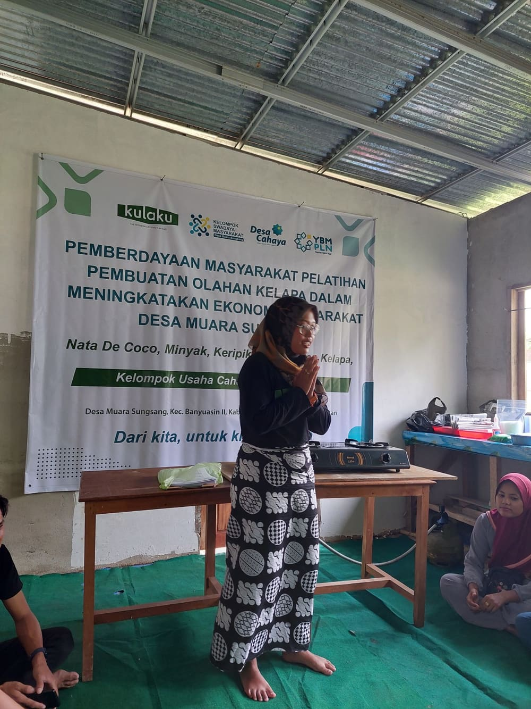
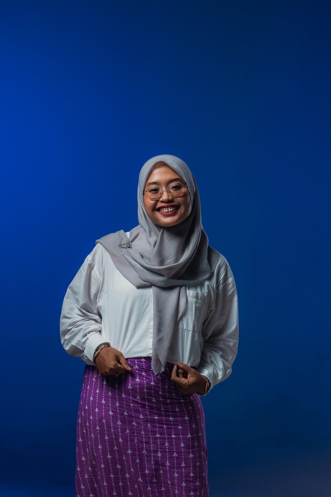
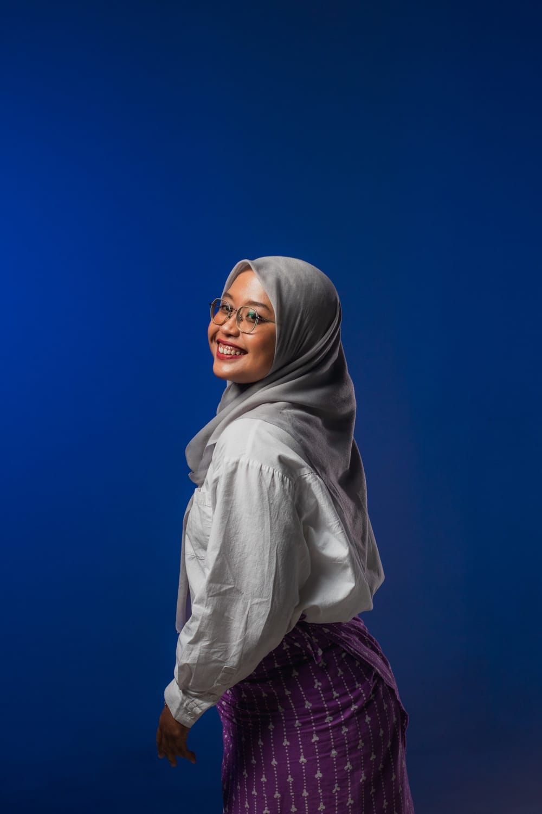
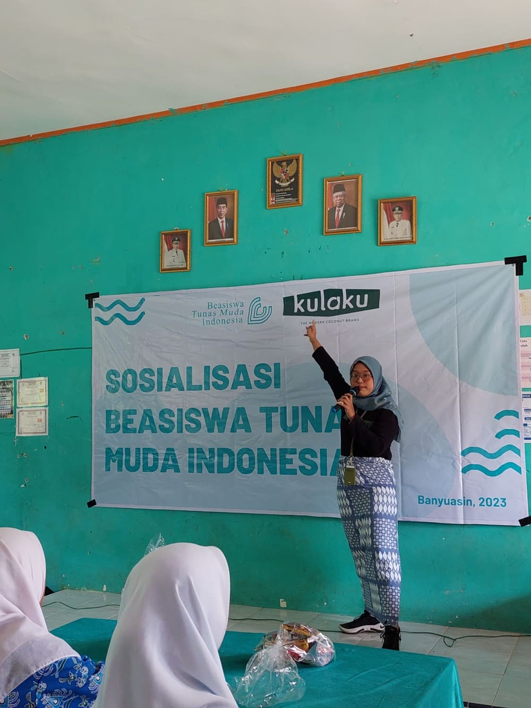
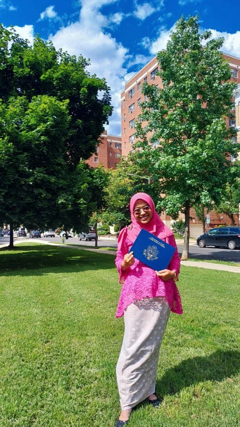
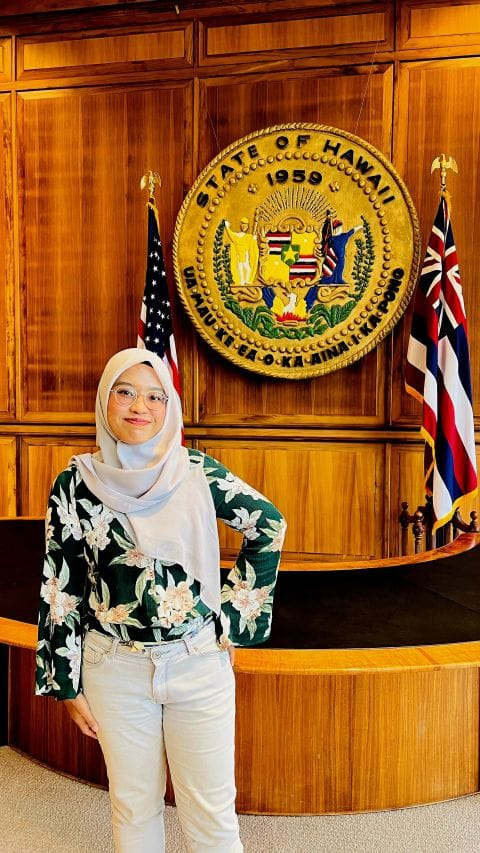
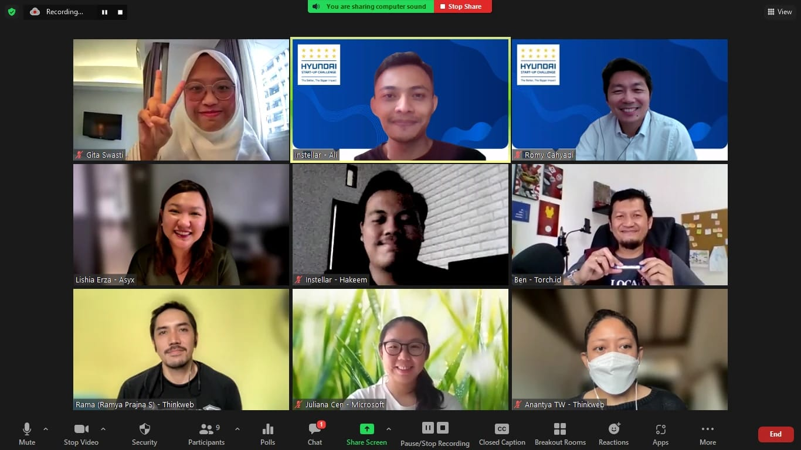

{kind=link}

Trained
100+ coconut farmers
Plus 50+ women in financial literacy, sanitation and household management across Banyuasin.
View experience
Sustainability & social impact
Based in Bali, Indonesia
Accounting-trained and impact-driven. I work across philanthropic portfolios, community programs and enterprise development, because numbers mean most when they protect people's futures.

“Equity is measured by who actually benefits.”
I studied Accounting at the University of Indonesia and spent my early career in audit at KPMG and Ernst & Young, learning how systems hold up under scrutiny and where they quietly fail. I now work across sustainability and social impact with a bias for practical strategy, real budgets, and accountability that does not hide injustice behind tidy averages.
Reaching people matters. What matters more is who actually benefits, who stays excluded, and what changes when programs meet structural barriers like geography, disability access, unpaid care work, language, and unequal power in decision-making. I look for work that treats those realities as core design constraints.
Outside work, I volunteer as a mentor, facilitator and moderator in education spaces with marginalized communities, showing up for learning that respects lived experience and builds long-term self-reliance.

Plus 50+ women in financial literacy, sanitation and household management across Banyuasin.
View experience
Ran the BTMI scholarship for coconut farmers' children, from application to outcome tracking.
View project
Selected by the U.S. Department of State, alongside the YSEALI Summit and Enviro-Tech workshop.
View honorsBlack Licorice
Leads portfolio strategy for a philanthropic accelerator making early bets on Indonesian founders working in maternal health and malnutrition. Modeled on the Mulago Foundation and the Community Health Impact Coalition, Black Licorice identifies the most promising hyperlocal NGOs, de-risks them, and builds them into institutionally fundable organizations.
Nuanu Social Fund
Managed a five-pillar community fund (Living, Nature, Education, Health & Wellness, Arts & Culture), covering rolling-basis grants to Beraban Village and a youth leadership grant program.
Pratisara Bumi Foundation
Managed a multi-initiative portfolio spanning sustainable enterprise incubation, women-led environmental leadership, and indigenous climate innovation across eastern Indonesia.
Kulaku Indonesia
Led training delivery and impact measurement for a coconut-farmer social enterprise, running a scholarship program and women's capacity-building curriculum alongside a 500+ farmer network.
Instellar Indonesia
Enterprise Development Officer · Jan – Sep 2022Project Officer · Feb – Dec 2021
Managed a six-program portfolio of accelerator and capacity-building initiatives for social enterprises, handling RFPs, grants, and funder and vendor relationships.
Kinara Indonesia
Supported two national and regional youth and women's economic-empowerment programs, managing implementation logistics and government stakeholder relationships.
Pacific Gateway Center
Produced an intersectional policy research report to inform a new immigrant and refugee farm program in Haleiwa, Oahu, benchmarked against comparable US nonprofit farm programs.

Department of Accounting, Universitas Indonesia
Ernst & Young Global Consulting Services
KPMG Indonesia
Joined full-time after an audit internship at KPMG earlier in 2018.
PT. Sinergi Daya Prima
PT Prodigi Konsultan
Infoscreening
Manager · Part-time · 2018 – May 2019Contributing Writer · Freelance · 2018 – 2019
A mass-media community sharing information about alternative screenings and film festivals in Indonesia since 2012.
Mar 2023 — Present · Kulaku Indonesia
A scholarship for middle-school children of coconut farmers in Banyuasin Regency, South Sumatra, running since 2020. In its third year the program committed fully to improving education quality for farmer families, in line with SDG 4, with fair, non-discriminatory selection.
Jun 2023 — Present · with Thom and Trang
A YSEALI Enviro-Tech post-program project combining waste management, recycling education, creative expression and charity. Two exhibitions, in Vietnam and Indonesia, with design workshops where students turn environmental issues into new products. Funded by the U.S. Embassy.
Jul 2022 — Dec 2022
Laboratorium Wirausaha dan Inovasi Sosial Sriwijaya: an intensive socio-preneur bootcamp for young people in South Sumatra, run with Purna Caraka Muda Indonesia Sumatra Selatan, Dinas Pemuda dan Olahraga, and Bank Indonesia Sumatera Selatan.

Feb 2021 — Aug 2022 · Instellar Indonesia
An accelerator and challenge competition by Hyundai Motor Group with People and Peace Link, MYSC, Instellar and Community Chest of Korea, nurturing young social entrepreneurs in environment, employment, electric vehicles and healthcare. Responsible for the 2021 and 2022 cohorts.
★ My proudest piece of writing
Shaping a Giant Together — a reflection
Read on SubstackI read to sharpen how I think about people, power and evidence, and I review what I read on Goodreads. A few recent reviews, in my own words:
Misdiagnosis and Myth in a Man-Made World
★★★★★“Progress comes through education, better research, and the simple discipline of believing patients when they describe their own bodies.”View on Goodreads ↗
Spirituality, struggle, and social justice
★★★★★“Perjuangan dipahami sebagai tanah tempat kebajikan, makna, dan ketahanan tumbuh.”
Struggle is understood as the soil where virtue, meaning and resilience grow.
View on Goodreads ↗A Radical Rethinking of the Way to Fight Global Poverty
★★★★★“Jarak antara niat baik dan dampak nyata terisi oleh detail desain, detail implementasi, dan detail kehidupan manusia yang jarang patuh pada teori.”
The gap between good intentions and real impact is filled by details of design, of implementation, and of human lives that rarely obey theory.
View on Goodreads ↗The story of how we came to talk
★★★★★“True interdisciplinary work means having genuine expertise in multiple fields and not just putting different academic papers side by side in a collection.”View on Goodreads ↗
Apr 2024
Bureau of Educational and Cultural Affairs, U.S. Department of State · with Pacific Gateway Center
Fellow in the Economic Empowerment theme, placed at Pacific Gateway Center in Hawaiʻi, an organization supporting immigrants, refugees and economically disadvantaged people. Saw first-hand how ethnicity, gender and economic status shape adults' learning journeys and outcomes.
Feb 2024
U.S. Embassy
Selected as one of the Professional Development Opportunity grant recipients at the YSEALI Summit in Bali.
Dec 2023
U.S. Embassy
One of 150 accomplished YSEALI alumni from all 11 member countries, brought together in Bali by the U.S. Department of State to build a network of community leaders and solve problems collaboratively.
Jun 2023
U.S. Embassy
Held in Chiang Mai, Thailand, 12–17 June 2023: a regional workshop equipping young leaders from Southeast Asia and Timor-Leste with the skills, connections and ideas to build partnerships that combat climate change and promote sustainable development.
Sep 2018
Badan Ekonomi Kreatif RI · with Infoscreening
A national forum by the Indonesian Film Board and BEKRAF connecting Indonesian filmmakers and their selected proposals with domestic and international funders.
Academy for Women Entrepreneurs (AWE)
Mentored in AWE Indonesia, a 5-month U.S. Department of State program combining the DreamBuilder platform with in-class mentoring for women entrepreneurs in Ende, East Nusa Tenggara, and Aceh.
dikembang
Gave personalized financial-management mentoring to small and medium enterprises facing the challenges of the COVID-19 pandemic.
ARKIPEL — Jakarta International Documentary & Experimental Film Festival
Supported a festival by Forum Lenteng that reads global social, political, economic and cultural phenomena through documentary and experimental cinema.
Gerakan Tenunkoe
Handled communications for a movement helping marginalized women weavers in East Nusa Tenggara grow from weavers into weaving-business owners.
Get Happy Indonesia
Planned content for a community non-profit starting conversations and spreading knowledge about depression, mental health and happiness.
Cerdas Digital
Facilitated a digital-citizenship curriculum for 7th-grade students at Labschool Junior High School.
Akademi Berbagi
Volunteered with a community learning movement for five years.
University of Indonesia
Bachelor's Degree, Accounting
Universitas Gadjah Mada
Summer Course, Human Rights · Fully funded scholarship · Sep – Oct 2023
Open to conversations about philanthropic portfolios, social-impact programs and sustainability partnerships. The fastest way to reach me is by email.
{kind=link}
{kind=link}
{kind=link}
{kind=link}
{kind=link}
{kind=link}
{kind=link}
{kind=link}
{kind=link}
{kind=link}
{kind=link}
{kind=link}
{kind=link}
{kind=link}